This section introduces the Building Permit and Certificate of Occupancy System (BPCOS), summarizes how a building permit moves through the system, and shows how to open BPCOS, sign in and create an account.
BPCOS is an online application of the OAS Unified Online Services of the Municipality of Oas, Albay. It is for builders and developers who apply for a building permit. It brings the whole process online: the application, the review of the requirements, the assessment of fees, the approval, the payment and the printing of the building permit, in line with the National Building Code. The applicant can send the request and follow its status at any time, and each office of the Municipality works on it in its own pages.
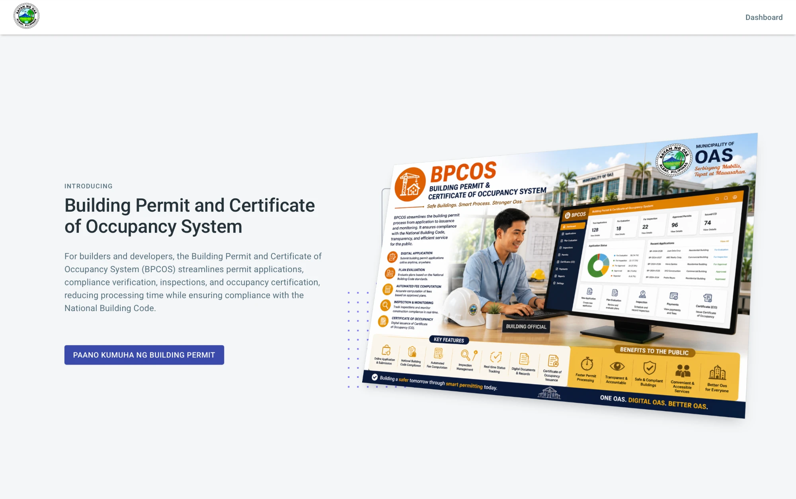
A building permit goes from the applicant to four offices, in this order. The table shows who does what and where it is explained.
| Step | Who | What happens | Section |
|---|---|---|---|
| 1 | Applicant | Creates an account and signs in, fills in the building permit request in four steps, uploads the requirements and sends them. The status of the application becomes SENT TO OBO. | Section 2 |
| 2 | Reviewer | Opens the application, checks the form and the requirements, and sets the review as started. | Section 3 |
| 3 | Building Official | Reviews each requirement (approve or decline), prepares the assessment of the fees, then approves or declines the permit. The status becomes APPROVED. | Section 4 |
| 4 | Treasury (cashier) | Receives the payment of the assessed fees and issues the official receipt (OR). The status becomes APPLICATION PAID. | Section 5 |
| 5 | Moderator | Adds the Fire Safety Evaluation Clearance (FSEC), uploads its certificate and prints the building permit. | Section 6 |
After the Moderator prints the building permit, the permit is released and the workflow ends. The applicant can then view the permit and print a copy, see Section 2.5.8.
The first time you open the page, a notice about cookies appears at the bottom. Click I Agree to close it. A small message, Settings Updated, may appear at the top right. Click Close to close it.
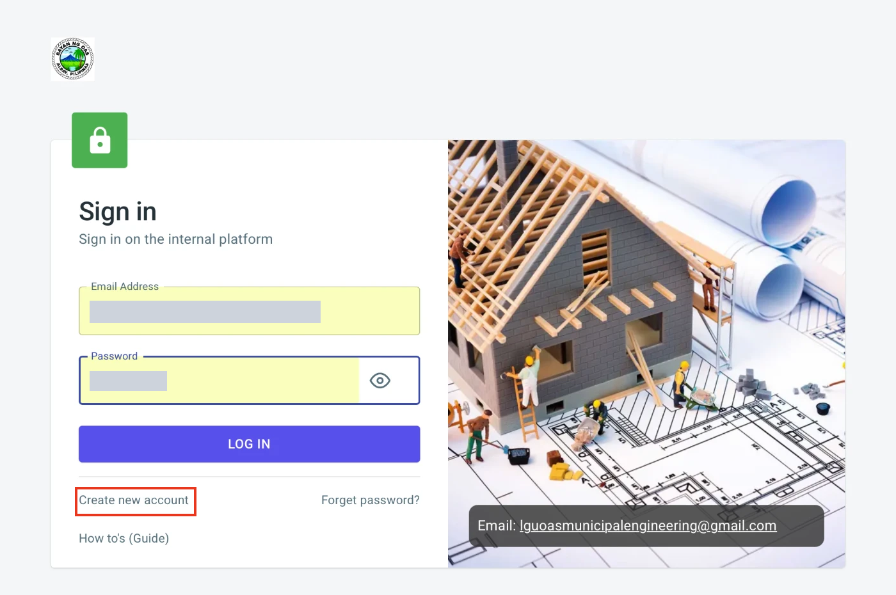
If the email or password is wrong, a red message appears below the Log In button. The message depends on which entry is wrong.
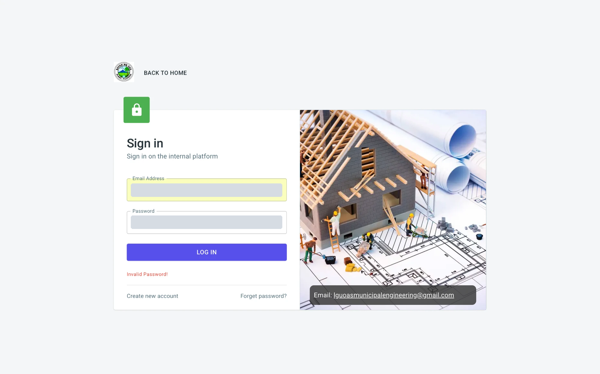
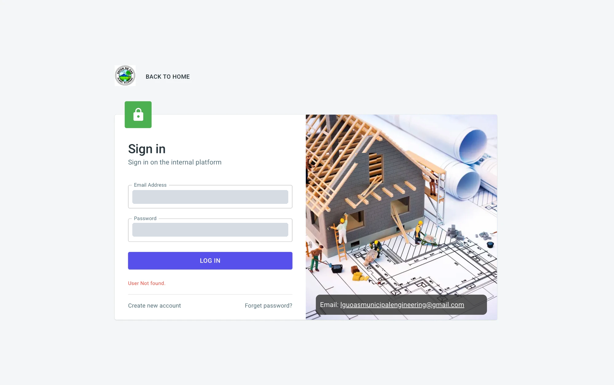
Summary of the messages:
| Message | What it means |
|---|---|
| User Not found. | No account exists for the email you typed. Check the spelling or create an account. |
| Invalid Password! | The password does not match the account. Retype it, or use Forget password? |
Other options on the Sign in page:
| Option | Use it to |
|---|---|
| Create new account | Register as a new user (see Section 1.5). |
| Forget password? | Reset a forgotten password (see Section 1.7). |
| How to's (Guide) | Open the guides of the system. |
New users must create an account before applying. From the Sign in page, click Create new account to open the Sign up form.
If an account already exists for the email you entered, a red message appears at the lower left when you click Create account, and no code is sent.
Already registered? Click Have an account? at the bottom of the form to go back to the Sign in page.
After you click Create account, the form is replaced by a verification screen and a green message appears at the lower left: Check your email and copy the code!
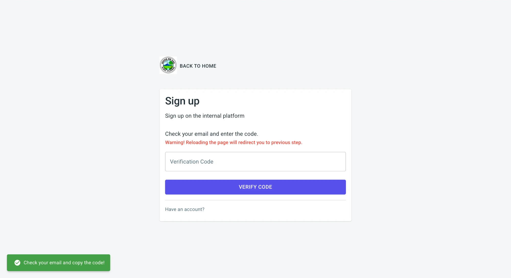
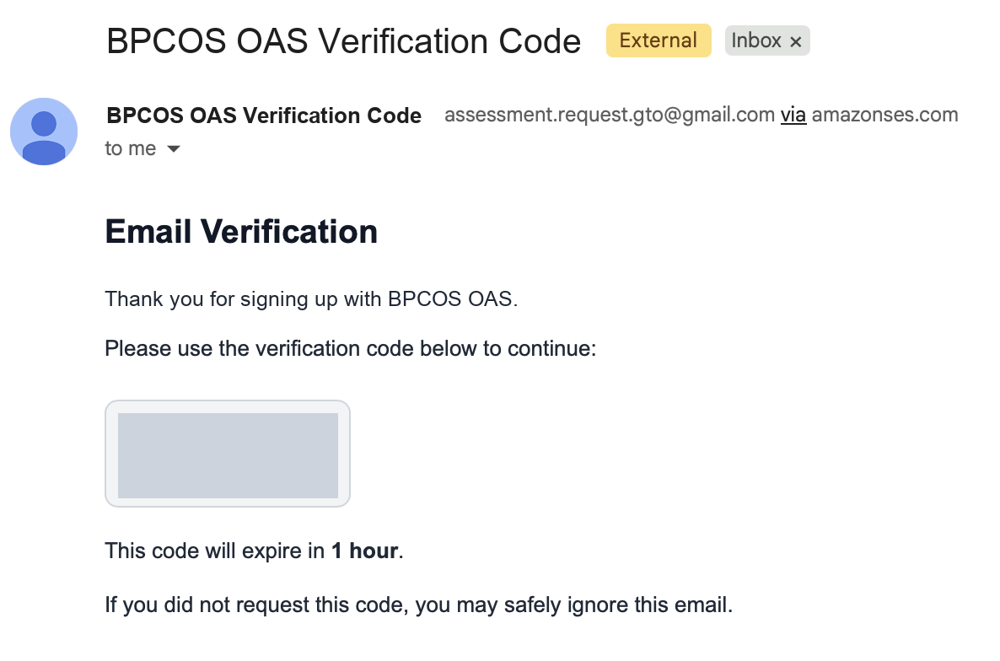
The email also says that the code expires in 1 hour. If you did not request the code, you can ignore the email.

If the code is correct, you are taken to the Sign in page and a green message appears at the lower left: Registration completed! Your account is ready. Enter your email and password to sign in (see Section 1.4).
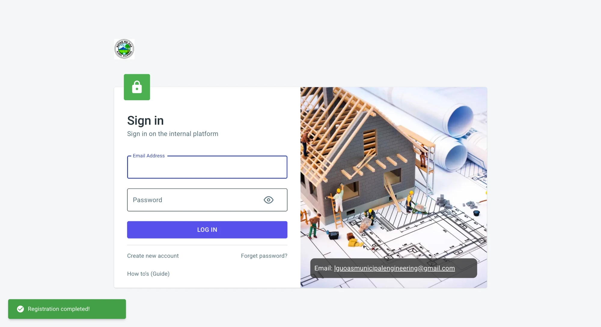
If the code you enter is incorrect, an error message appears at the lower left of the screen, as shown below. You stay on the verification screen and can try again.
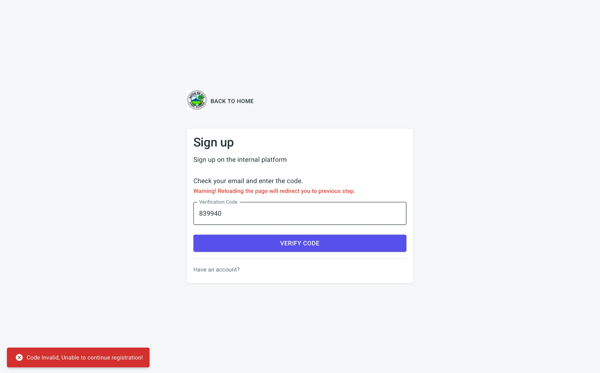
| Message | What it means and what to do |
|---|---|
| Check your email and copy the code! (green) | The code was sent. Open your email and continue with the steps above. |
| Failed! email is already in use! (red) | An account already exists for this email. Go back to the Sign in page and sign in, or use Forget password? if you cannot remember the password. |
| Code is not sent. Check your internet connection. (red) | The system could not send the email. Check your connection and click Create account again. |
| Must be a valid email / First name is required / Last name is required / Email is required / Password is required / Passwords must match / This field must be checked | A Sign up field is empty or incorrect. The message appears under the field. Correct it and try again. |
| Registration completed! (green) | Your account is ready. Sign in. |
If you cannot remember your password, you can set a new one using a link sent to your email.
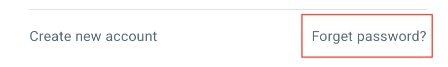
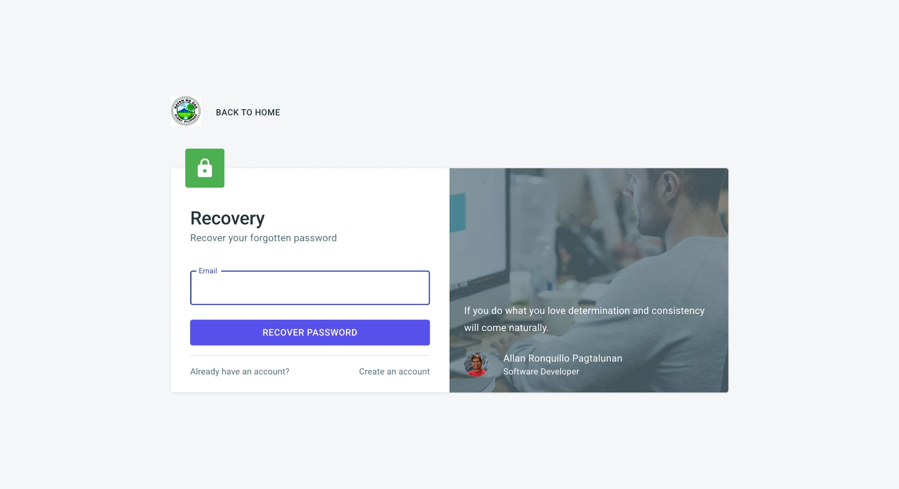
You are taken back to the Sign in page and a green message appears at the lower left: Recovery link successfully sent to your email.
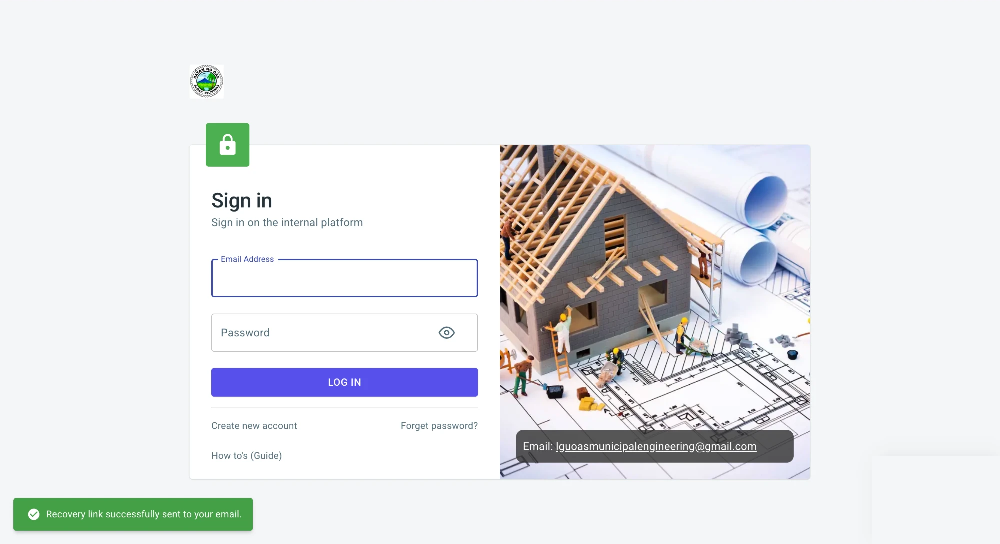
Open the email titled BPCOS Password Reset. If you do not see it, check your Spam or Junk folder. Click the Reset Password button. If the button does not work, copy the link shown in the email and paste it into your browser.
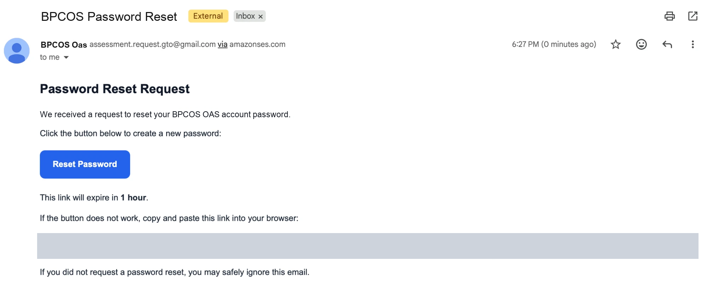
The link opens the Reset Password page in your browser.
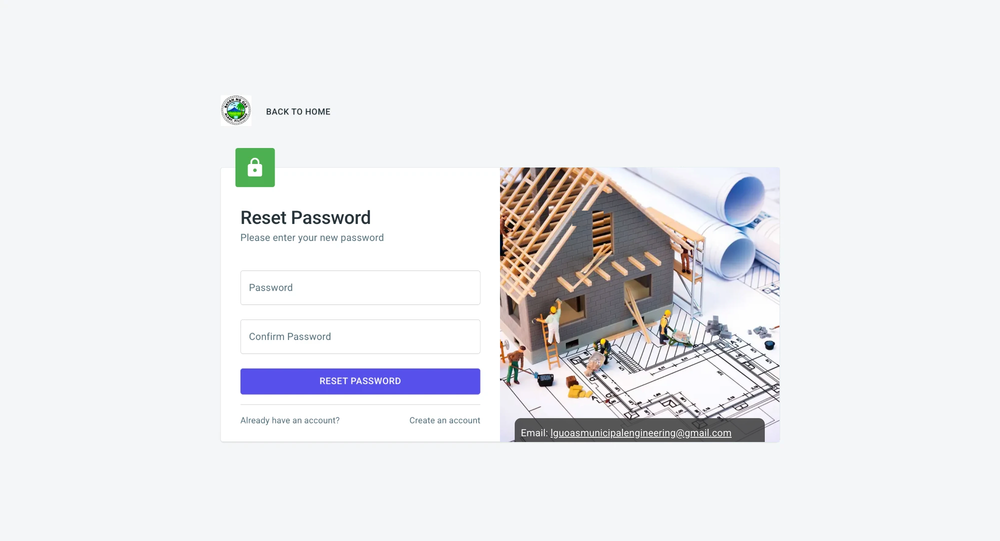
After the password is reset, you are returned to the Sign in page. Sign in with your email and the new password.
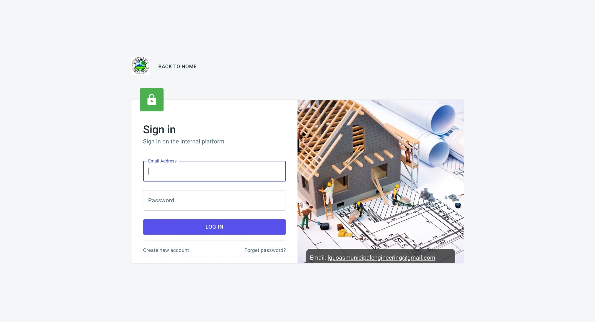
| Message | What it means and what to do |
|---|---|
| Email address is required | The Email field on the Recovery page is empty. Enter your email. |
| Email address not found. (red) | No account exists for that email. Check the spelling, or create an account. |
| Recovery link successfully sent to your email. (green) | The link was sent. Open your email. |
| Must be at least 7 characters | The new password is too short. Use 7 or more characters. |
| Passwords must match | Password and Confirm Password are different. Retype both. |
| Password Successfully Reset (green) | Your password was changed. Sign in with the new password. |